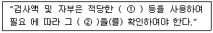
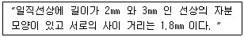
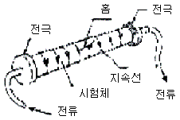
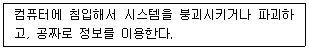
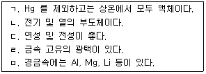

자기비파괴검사기능사 (2009-07-12 기출문제)
1과목: 자기탐상시험법
1. 초음파탐상시험에서 “거친 탐상을 한 후, 정밀 탐상한다.” 는 내용을 옳게 설명한 것은?
- 거친 탐상으로 표시된 부분과 전체를 다시 자세히 탐상하는 것이다.
- 거친 탐상에서 발견된 곳을 대상으로 다시 자세히 탐상하는 것이다.
- 거친 탐상에서 표시된 곳을 제외하고 나머지 부분만 다시 탐상하는 것이다.
- 표준시험편 제작 시에만 해당되는 것으로 일반적인 탐상에서는 정밀 탐상을 하지 않는다.
(정답률: 알수없음)

2. 다음 결함 중 침투탐상시험으로 발견이 불가능한 것은?
- 갈라짐
- 내부 기공
- 고온균열
- 분화구형 균열
(정답률: 80%)
3. 다른 비파괴검사법과 비교하였을 때 침투탐상시험의 단점으로 옳은 것은?
- 비금속의 표면에 사용할 수 없다.
- 기공이 많은 재료에 사용할 수 없다.
- 크기가 큰 제품에는 사용할 수 없다.
- 원자번호가 큰 금속의 표면에는 사용할 수 없다.
(정답률: 61%)
4. 다음 중 비금속재료에 대한 비파괴검사를 실시하기에 적합하지 않은 시험 방법은?
- 방사선투과시험
- 초음파탐상시험
- 자분탐상시험
- 침투탐상시험
(정답률: 79%)
5. 다음 중 각종 비파괴검사에 대한 설명으로 틀린것은?
- 방사선투과시험은 기록의 보관이 용이하나 방사선 피폭 등의 위험이 있다.
- 초음파탐상시험은 대상물의 내, 외부 결함을 모두 검출할 수 있으나 숙련된 기술이 필요하다
- 침투탐상시험은 표면 흠에 침투액을 침투시키는 방법이므로 흡수성인 재료는 탐상에 적합하지 않다.
- 와전류탐상시험은 유도전류를 변화시켜 내부 결함을 검출할 수 있으나 강자성체만 탐상이 가능하다.
(정답률: 84%)
6. 누설검사를 할 때 1atm 을 다른 단위로 환산한 것중 틀린 것은?
- 14.7psi
- 760torr
- 980㎏/cm2
- 101.3kPa
(정답률: 69%)
7. 구조물의 용접부 및 기계부품, 장치 등의 정기검사에 적용되며, 특히 고압용기, 석유탱크 등의 정기적 보수검사에서 유해한 결함 중의 하나인 표면균열의 검출에만 사용할 수 있는 비파괴검사법은?
- 전자유도검사
- 누설검사
- 침투탐상검사
- 음향방출검사
(정답률: 58%)
8. 다른 누설검사법들과 비교하여 기포누설시험의 장점에 대한 설명으로 틀린 것은?
- 지시의 관찰이 용이하다.
- 누설 위치의 판단이 빠르다.
- 검사비용이 적게 들며 안전한 시험이다.
- 감도가 매우 높고, 정확한 교정이 용이하다.
(정답률: 45%)
9. L/D 의 비가 3, 코일의 감은 수가 10회 인 강봉을 코일법으로 자분탐상시험 할 때 요구되는 전류는 몇 A 인가? (단, 강봉은 1회에 측정 가능한 길이 이며, L은 봉의 길이, D는 봉의 외경이다.
- 30
- 700
- 1167
- 1500
(정답률: 41%)
10. X선의 일반적 특성에 대한 설명으로 옳은 것은?
- 높은 주파수를 갖는다.
- 높은 지향성을 갖는다.
- 파장이 긴 전자파의 일종이다.
- 물체에 부딪치면 모두 반사한다.
(정답률: 53%)
11. 다음 중 시험체 내부 중앙부의 결함 모양 검출에 가장 적합한 비파괴검사법은?
- 자분탐상검사
- 침투탐상검사
- 방사선투과검사
- 와전류탐상검사
(정답률: 78%)
12. 다음 중 시험체 내부에만 존재하는 불연속의 위치와 깊이를 측정하는데 가장 적합한 비파괴검사법은?
- 방사선투과검사
- 초음파탐상검사
- 자분탐상검사
- 침투탐상검사
(정답률: 63%)
13. 다음 중 “금속학적 연속성이 파단 되었음” 을 나타내는 비파괴검사 용어로 적합한 것은?
- 겹침
- 수축
- 이음매
- 불연속
(정답률: 80%)
14. 와전류탐상시험에서 다음 중 검사 코일의 임피던스 변화에 미치는 영향이 제일 작은 인자는?
- 시험 속도
- 시험 주파수
- 시험체의 전도율
- 시험체의 투자율
(정답률: 48%)
15. 자분탐상시험에서 일반적으로 형광자분을 사용하는 것이 비형광자분을 사용하는 것보다 우수한 점은?
- 세척성이 양호하다.
- 검출성이 양호하다.
- 제거성이 양호하다.
- 자화성이 양호하다.
(정답률: 91%)
16. 다음 중 강자성체의 특성이라 할 수 없는 것은?
- 자화가 잘 된다.
- 높은 투자율을 가진다.
- 자기이력곡선을 가진다.
- 자기이력곡선에 명확한 포화점이 있다.
(정답률: 34%)
17. 다음 중 건식법을 다른 자분탐상검사와 비교하였을 때 장점으로 옳은 것은?
- 미세한 결함 검사에 효과적이다.
- 표면직하 결함 검사에 효과적이다.
- 거친 표면 검사에 효과적이다.
- 다량 부품의 검사에 효과적이다.
(정답률: 52%)
18. 다음 중 자분탐상검사에서 자분이 갖추어야 할 요건이 아닌 것은?
- 비독성이어야 한다.
- 낮은 보자성을 가져야 한다.
- 낮은 투자율을 가져야 한다.
- 검사품과 색대비가 좋아야 한다.
(정답률: 88%)
19. 자기탐상시험의 잔류자기에 대한 설명으로 옳은 것은?
- 처음 형성된 자계보다 항상 크다.
- 처음 형성된 자계보다 항상 작다.
- 처음 형성된 자계와 항상 일정하다.
- 처음 형성된 자계보다 항상 크거나 같다.
(정답률: 38%)
20. 자화시킨 후 자화전류를 끊고 자분을 뿌려주는 시험방법을 무엇이라 하는가?
- 연속법
- 잔류법
- 습식법
- 건식법
(정답률: 79%)
2과목: 자기탐상관련규격
21. 다음 중 자분탐상시험에서 결함을 확실히 검출하기 위해서는 결함의 방향과 자속의 방향을 어떻게 하여야 효과적인가?
- 자속과 결함의 방향이 45° 가 되게 한다.
- 자속과 결함의 방향이 90° 가 되게 한다.
- 자속과 결함의 방향이 180° 가 되게 한다.
- 자속과 결함의 방향이 210° 가 되게 한다.
(정답률: 80%)
22. 길이 45㎝, 직경 2.5㎝ 의 중심도체를 사용하여 원형자화법으로 외경 5㎝ 의 부품을 검사할 때의 전류 값으로 가장 적합한 것은?
- 500A
- 800A
- 1000A
- 1800A
(정답률: 18%)
23. 자속밀도(magnetic flux density)에 대한 설명으로 옳은 것은?
- 자성체를 끌어당기는 힘을 갖고 있는 성질
- 자속의 방향과 수직인 단위면적당 자속선의 수
- 단위시간에 단위면적을 통과하는 입자의 수
- 자계 방향에 대하여 일정한 면적내에 관측된 자분입자의 수
(정답률: 31%)
24. 말굽형 영구자석을 사용하여 자분탐상검사를 할때의 특징을 설명한 것으로 옳은 것은?
- 전원이 필요 없으며 소형이므로 취급이 용이하고 일정한 자속밀도를 유지하므로 전자석보다 검출능력이 높다.
- 시험체에 대한 자속의 유입 깊이가 교류에 비해 깊으므로 내부에 있는 결함 탐상에 가장 적합하다.
- 교류 전자석을 이용하는 자화기와 동일하게 시험면에 대한 자속밀도가 높아 표면 결함의 검출이 우수하다.
- 시험체의 두께가 두꺼울수록 시험면의 자속밀도가 급격히 감소되어 결함의 검출 능력이 저하된다.
(정답률: 47%)
25. 어떤 전하(q)가 있을 때 이 전하로부터 거리 r 만큼 떨어진 곳에 같은 크기의 전하(q)에 작용하는 힘(F, 자계의 세기) 을 나타낸 식으로 옳은 것은? (단, k 는 상수이다.)
- F = k × q2 / r2
- F = k × q2 / r
- F = k × r2 / q2
- F = k × r / q2
(정답률: 48%)
26. 철강 재료의 자분탐상 시험방법 및 자분모양의 분류(KS D 0213)에 따른 B형 대비시험편의 사용 용도와 가장 거리가 먼 것은?
- 장치의 성능 조사에 사용
- 자분의 성능 조사에 사용
- 탐상 유효범위 조사에 사용
- 검사액의 성능 조사에 사용
(정답률: 70%)
27. 항공 우주용 자기탐상 검사방법(KS W 4041)에 따른 품질관리상 물을 매질로 하는 현탁액의 시험에서 계면활성제의 양은 현탁액의 알칼리성이 몇 pH를 넘지 않도록 규정하고 있는가?
- 4.2
- 5.6
- 9.2
- 10.6
(정답률: 32%)
28. 철강 재료의 자분탐상 시험방법 및 자분모양의 분류(KS D 0213)에 규정된 B형 대비시험편의 특성을 잘못 설명한 것은?
- 시험편의 외경은 50, 100, 200㎜ 가 있다.
- 피복한 도체를 관통구멍의 중심에 통과시킨다.
- 시험편 단면부에 자분을 잔류법으로 적용하여 사용한다.
- 용도에 따라 시험체와 같은 재질 및 지름의 것을 사용 할 수도 있다.
(정답률: 76%)
29. 철강 재료의 자분탐상 시험방법 및 자분모양의 분류(KS D 0213)의 A형 표준시험편에 대한 설명으로 옳은 것은?
- A2 표준시험편은 A1 표준시험편보다 높은 유효자계의 강도로 자분모양이 나타난다.
- A2 표준시험편은 A1 표준시험편보다 낮은 유효자계의 강도로 자분모양이 나타난다.
- A2 표준시험편과 A1 표준시험편은 판 두께만 다르고 인공 흠의 모양은 직선형으로 모두 같다.
- A1 표준시험편과 A2 표준시험편은 인공흠의 깊이, 판 두께 및 흠의 모양은 모두 같다.
(정답률: 59%)
30. 철강 재료의 자분탐상 시험방법 및 자분모양의 분류(KS D 0213)에서 다음 괄호 안에 알맞은 내용은?

- ① 대비시험편, ② 질량
- ① 전류, ② 탈자
- ① 표준시험편, ② 성능
- ① 자기량, ② 방향
(정답률: 67%)
31. 철강 재료의 자분탐상 시험방법 및 자분모양의 분류(KS D 0213)에서 시험체의 용접부 그루브면이 좁아 A형 표준시험편을 사용할 수 없는 경우 대신 사용할 수 있는 표준시험편으로 옳은 것은?
- B형
- C형
- D형
- E형
(정답률: 39%)
32. 철강 재료의 자분탐상 시험방법 및 자분모양의 분류(KS D 0213)에서 기호를 M으로 표시하며 시험체 또는 시험할 부위를 전자석 또는 영구 자석의 자극 사이에 놓아 자화하는 시험방법을 무엇이라 하는가?
- 극간법
- 축통전법
- 전류관통법
- 직각통전법
(정답률: 90%)
33. 철강 재료의 자분탐상 시험방법 및 자분모양의 분류(KS D 0213)에서 연속법일 때의 자화조작 방법으로 옳은 것은?
- 자화조작 중에 자분적용을 완료한다.
- 탈자를 한 후에 자분적용을 완료한다.
- 자화력을 제거한 후 자분적용을 완료한다.
- 자화조작 종료 후에 자분적용을 완료한다.
(정답률: 62%)
34. 철강 재료의 자분탐상 시험방법 및 자분모양의 분류(KS D 0213)에 의해 형광자분을 사용하여 자분모양을 관찰할 때 관찰면의 밝기와 자외선의 강도를 규정한 내용으로 옳은 것은?
- 관찰면의 밝기는 15[lx] 이하이며, 관찰면 에서의 자외선 강도는 600[μW/cm2] 이상이어야 한다.
- 관찰면의 밝기는 20[lx] 이하이며, 관찰면에서의 자외선 강도는 800[μW/cm2] 이상이어야 한다.
- 관찰면의 밝기는 30[lx] 이상이며, 관찰면에서의 자외선 강도는 1000[μW/cm2] 이하이어야 한다.
- 관찰면의 밝기는 50[lx] 이상이며, 관찰면에서의 자외선 강도는 1500[μW/cm2] 이하이어야 한다.
(정답률: 67%)
35. 철강 재료의 자분탐상 시험방법 및 자분모양의 분류(KS D 0213)에 의한 자분모양의 관찰시 잔류법에서 시험체가 서로 접촉했을 때 또는 강자성체에 접촉했을 때 생기는 누설자속에 의해 형성되는 부정형의 자분모양을 무엇이라 하는가?
- 단면급변 지시
- 자기펜 자국
- 분산한 자분모양
- 원형상의 자분모양
(정답률: 75%)
36. 철강 재료의 자분탐상 시험방법 및 자분모양의 분류(KS D 0213)에서 자분모양이 다음과 같을 때 지시길이는 어떻게 판정하는가?

- 2㎜ 와 3㎜ 각각 2개의 지시길이로 판정한다.
- 3.8㎜ 와 3㎜ 각각 2개의 지시길이로 판정한다
- 연속한 1개의 지시로 간주되며 그 길이는 5㎜이다.
- 연속한 1개의 지시로 간주되며 그 길이는 6.8㎜이다.
(정답률: 71%)
37. 철강 재료의 자분탐상 시험방법 및 자분모양의 분류(KS D 0213)에서 용접부의 경우 전처리는 원칙적으로 시험부위에서 모재측으로 약 몇 ㎜ 넓게 잡아야 하는가?
- 5㎜
- 10㎜
- 15㎜
- 20㎜
(정답률: 75%)
38. 철강 재료의 자분탐상 시험방법 및 자분모양의 분류(KS D 0213)에서 그림과 같은 자화 방법은?

- 축통전법
- 직각통전법
- 프로드법
- 전류관통법
(정답률: 47%)
39. 철강 재료의 자분탐상 시험방법 및 자분모양의 분류(KS D 0213)에 의한 탈자의 확인 방법에 이용되지 않는 것은?
- 곤충핀
- 투과도계
- 자기컴파스
- 가우스미터
(정답률: 40%)
40. 철강 재료의 자분탐상 시험방법 및 자분모양의 분류(KS D 0213)에서 다음 중 전류지시를 제거하는 방법으로 옳은 것은?
- 매크로 시험으로 전류지시를 제거해 준다.
- 강자성체를 시험면에 접촉하여 제시험한다.
- 전류를 작게 하거나 잔류법으로 재시험한다.
- 시험면을 재차 전처리하고 연속법으로 재시험한다.
(정답률: 56%)
3과목: 금속재료일반 및 용접일반
41. 검색어를 통해 색인화된 인터넷 자료를 찾는데 유용한 서비스를 제공하는 것은?
- Gopher
- WAIS
- Archile
- IRC
(정답률: 19%)
42. 다음 중 비트맵 이미지 파일의 확장자로 옳은 것은?
- zip
- bmp
- rar
- lha
(정답률: 60%)
43. 다음 설명에 해당하는 것은?

- 크래커
- 네트워크 관리자
- 보안 관리자
- DB 관리자
(정답률: 67%)
44. 인터넷으로 연결되는 가상공간에서 지켜야 할 예절을 가리키는 용어는?
- 네티켓(Netiquette)
- 네티즌(netizen)
- 에티켓(etiquette)
- 유티켓(youtiquette)
(정답률: 55%)
45. 다음 중 컴퓨터 기억장치 용량을 나타내는 단위를 작은 것부터 차례로 나열한 것은?
- KB, MB, GB, TB
- KB, MB, TB, GB
- KB, GB, MB, TB
- KB, TB, GB, MB
(정답률: 56%)
46. 금속이 소성변형을 할 때 외력이 재료에 가해지면 결정내에서 인접하고 있는 평행한 격자면에서 일어나는 것은?
- 재결정
- 슬립
- 피니싱
- 회복
(정답률: 59%)
47. Fe3C(시멘타이트)에서 C의 원자비는 몇 % 인가?
- 15
- 25
- 45
- 75
(정답률: 62%)
48. 다음 중 금속의 결정구조에 대한 설명으로 틀린것은?
- 결정입자의 경계를 결정입계라 한다.
- 결정체를 이루고 있는 각 결정을 결정입자라 한다.
- 체심입방격자는 단위격자 속에 있는 원자수는 3개이다.
- 물질을 구성하고 있는 원자가 입체적으로 규칙적인 배열을 이루고 있는 것을 결정이라 한다.
(정답률: 82%)
49. 금속이 열 및 전기전도도가 좋은 이유로 가장 옳은 것은?
- 액체이기 때문이다.
- 비중이 크기 때문이다.
- 자유전자가 이동하기 때문이다.
- 변태점을 갖고 있기 때문이다.
(정답률: 62%)
50. 다음 중 경질 자성재료에 해당되지 않는 것은?
- 알니코 자석
- 페라이트 자석
- Nd 자석
- Si 강판
(정답률: 56%)
51. Fe-C계 평형 상태도에서 온도가 상승함에 따라 α-Fe이 γ-Fe로 변태하는 910° 점을 무엇이라 하는가?
- A2변태점
- A3변태점
- A4변태점
- 공정점
(정답률: 62%)
52. 보기는 금속의 특성을 설명한 것이다. 옳은 것으로만 모두 나열한 것은?

- ㄱ, ㄴ
- ㄱ, ㄴ, ㄹ
- ㄷ, ㄹ, ㅁ
- ㄱ, ㄷ, ㄹ, ㅁ
(정답률: 62%)
53. Al-Si계 합금에 금속나트륨, 수산화나트륨, 플루오르화알칼리, 알칼리염류 등을 첨가하면 조직이 미세화되고 공정점이 내려간다. 이러한 처리방법을 무엇이라 하는가?
- 시효 처리
- 개량 처리
- 실루민 처리
- 용체화 처리
(정답률: 34%)
54. 구조용 합금강 중에서 듀콜강, 해드필드강 등은 어느 합금강에 속하는가?
- Ni 강
- Cr 강
- Mn 강
- W 강
(정답률: 48%)
55. 재료를 실온까지 온도를 내려서 다른 형상으로 변형시켰다가 다시 온도를 상승시키면 어느 일정한 온도 이상에서 원래의 형상으로 변화하는 성질을 이용한 합금으로 대표적인 합금이 Ni-Ti계인 것은?
- 형상기억합금
- 비정질합금
- 제진합금
- 클래드합금
(정답률: 80%)
56. 금속간 화합물에 대한 설명으로 옳은 것은?
- 자유도가 5인 상태의 물질이다.
- 금속과 비금속사이의 혼합 물질이다.
- 금속이 공기 중의 산소와 화합하여 부식이 일어난 물질이다.
- 두 가지 이상의 금속 원소가 간단한 원자비로 결합되어 있는 것으로서 원래 원소와는 전혀 다른 성질을 갖는 물질이다.
(정답률: 53%)
57. Fe, Ni과 같은 금속에 S의 불순물이 모여 있으면, 가공 중에 균열이 생기고 잘 부스러져 가공이 곤란해지는 성질이 있다. 이러한 성질을 무엇이라고 하는가?
- 청열 메짐
- 적열 메짐
- 가공 경화
- 상온 시효
(정답률: 54%)
58. 용접 전 장비 점검 및 준비사항으로 틀린 것은?
- 전선의 접속은 견고하고 확실 한가 점검할 것
- 작업대와 모재에 적당한 습기가 있을 거서
- 직류 용접의 경우 정극성 또는 역극성을 선택할 것
- 용접봉이 선택되면 전류 및 전압을 조정할 것
(정답률: 78%)
59. 정격 2차 전류 200 [A] 정격사용율 40%의 아크 용접기로 150 [A] 의 전류사용 시 허용사용률은 약 몇 %인가?
- 71
- 60
- 82
- 58
(정답률: 43%)
60. 아세틸렌가스의 화학식으로 맞는 것은?
- CH4
- C2H2
- C2H4
- C3H8
(정답률: 23%)